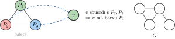
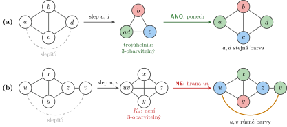
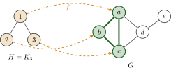
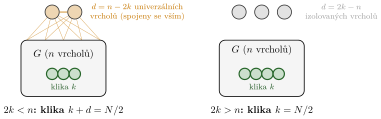
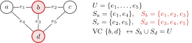
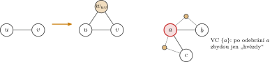
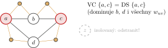

8.6 Cvičení 3: Polynomiální redukce¶
Pro NP-úplnost vždy dokazujeme dvě věci: (a) problém je v \(\href{../ch-np/ch-np-tridy-nedeterministicke-casove-slozitosti.html#def-ntime}{\class{woo-pk-def-ntime}{\NP}}\), (b) existuje redukce ze známého NP-těžkého problému. Stačí-li nám v redukci odpovědět „triviálně“ (např. když je parametr nesmyslně velký), vypíšeme nějakou pevnou ANO- či NE-instanci cílového problému.
Cvičení 3.1 (= cvičení 2.5)
Navrhněte postup, jak najít platné 3-obarvení grafu \(G\) pomocí orákula pro rozhodovací verzi problému 3-obarvitelnosti: orákulum o libovolném grafu na vstupu rozhodne, zda je 3-obarvitelný, či nikoli.
Řešení
Redukce s orákulem: \(\href{../ch-zoo/ch-zoo-3-coloring.html#prob-3col}{\class{woo-pk-prob-3col}{\prob{3-Col}}}\): hledání \(\to\) \(\href{../ch-zoo/ch-zoo-3-coloring.html#prob-3col}{\class{woo-pk-prob-3col}{\prob{3-Col}}}\): rozhodování. Jak: Do grafu postupně přidáváme omezení a orákulem hlídáme, že zůstává 3-obarvitelný.
Opět samo-redukovatelnost jako u TSP v kapitole 1: postupně do grafu přidáváme omezení a orákulem hlídáme, že graf zůstává 3-obarvitelný.
Algoritmus (paleta):
- Zeptej se orákula na \(G\). Odpoví-li \(\NE\), obarvení neexistuje – konec.
- Přidej ke grafu paletu: nový trojúhelník \(P_1P_2P_3\). (Trojúhelník je 3-obarvitelný, \(G\) taky a nejsou propojené, takže graf zůstane 3-obarvitelný; \(P_1,P_2,P_3\) mají v každém obarvení tři různé barvy, pojmenujme je \(1,2,3\).)
- Pro každý vrchol \(v\in V(G)\): zkus \(v\) vynutit barvu \(c\in\{1,2\}\) tak, že ho spojíš hranou s oběma vrcholy palety různými od \(P_c\). Je-li graf stále 3-obarvitelný (orákulum: \(\ANO\)), hrany ponech; jinak je odstraň a zkus další \(c\). Neprojde-li ani \(c=1\), ani \(c=2\), vynuť \(c=3\) bez ptaní.
- Na konci je každý vrchol spojen se dvěma vrcholy palety, takže má jedinou možnou barvu – tu vypiš.

Korektnost: invariant „aktuální graf je 3-obarvitelný“ platí po každém kroku. Přidané hrany odpovídají přesně volbě „\(v\) má barvu \(c\)“, takže pokud volba \(c=1\) ani \(c=2\) nepůjde, v každém obarvení aktuálního grafu má \(v\) barvu \(3\) a vynucení \(c=3\) invariant zachová. Na konci je výsledný graf 3-obarvitelný a každé jeho obarvení zúžené na \(V(G)\) je platné obarvení \(G\) (hrany \(G\) jsme neubírali).
Složitost: \(1+2|V|\) dotazů na orákulum, každý graf má polynomiální velikost \(\Rightarrow\) polynomiálně mnoho kroků plus volání orákula.
Alternativa (slepování): dokud \(G\) není úplný graf, vezmi nesousední \(u,v\) a zkus je ztotožnit (slepit do jednoho vrcholu). Je-li výsledek 3-obarvitelný, ponech – \(u,v\) dostanou stejnou barvu; jinak přidej hranu \(uv\) – v každém obarvení mají \(u,v\) různé barvy. Skončíme s úplným grafem na nejvýše 3 „super-vrcholech“, každý dostane vlastní barvu.

Jeden krok slepování na dvou malých grafech (nad rámec přednášky). Všimni si: v (a) mají \(a,d\) v každém obarvení stejnou barvu (oba sousedí s \(b\) i \(c\)), takže slepení projde; v (b) má \(u\) vždy barvu \(z\), a ta se liší od barvy \(v\) – slepení dá \(K_4\), a proto přidáme hranu \(uv\).
Cvičení 3.2
Dokažte, že \(\href{#cv-3-2}{\class{woo-pk-pojem-subgraph-isomorphism}{\prob{Subgraph Isomorphism}}}\) je NP-úplný: jsou dány grafy \(G\) a \(H\). Obsahuje \(G\) podgraf izomorfní s \(H\)? (Tj. existuje prosté zobrazení \(f\colon V(H)\to V(G)\) takové, že pro každou hranu \(\{u,v\}\in E(H)\) je \(\{f(u),f(v)\}\in E(G)\)?)
Řešení
Redukce: \(\href{ch-is-is-clique.html#prob-cliquer}{\class{woo-pk-prob-cliquer}{\prob{Clique}}} \mathrel{\href{../ch-redukce/ch-redukce-jak-porovnat-slozitost-dvou-problemu.html#def-redukce}{\class{woo-pk-def-redukce}{\redp}}} \href{#cv-3-2}{\class{woo-pk-pojem-subgraph-isomorphism}{\prob{Subgraph Isomorphism}}}\), instance \((G,k)\) \(\mapsto\) \((G,\ H=K_k)\).
V \(\href{../ch-np/ch-np-tridy-nedeterministicke-casove-slozitosti.html#def-ntime}{\class{woo-pk-def-ntime}{\NP}}\): certifikát je zobrazení \(f\) (tabulka \(|V(H)|\) dvojic). Ověříme prostotu a pro každou hranu \(H\) přítomnost obrazu v \(G\) – polynomiálně.
NP-těžkost: \(\href{ch-is-is-clique.html#prob-cliquer}{\class{woo-pk-prob-cliquer}{\prob{Clique}}}\mathrel{\href{../ch-redukce/ch-redukce-jak-porovnat-slozitost-dvou-problemu.html#def-redukce}{\class{woo-pk-def-redukce}{\redp}}}\href{#cv-3-2}{\class{woo-pk-pojem-subgraph-isomorphism}{\prob{Subgraph Isomorphism}}}\). Instanci \((G,k)\) zobrazíme na \((G,\ H=K_k)\). Je-li \(k>|V(G)|\), je odpověď zjevně \(\NE\) a vypíšeme pevnou NE-instanci (např. \(G=K_1\), \(H=K_2\)) – jinak by \(K_k\) při binárně zadaném obrovském \(k\) nebyl polynomiálně velký.

(\(\Rightarrow\)) Je-li \(S=\{s_1,\dots,s_k\}\) klika v \(G\), pak \(f(i)=s_i\) je prosté a každou hranu \(\{i,j\}\) úplného grafu \(K_k\) zobrazí na hranu \(\{s_i,s_j\}\in E(G)\).
(\(\Leftarrow\)) Je-li \(f\colon V(K_k)\to V(G)\) prosté a zachovává hrany, pak obraz \(f(V(K_k))\) má \(k\) různých vrcholů (prostota) a každé dva jsou spojeny (každá dvojice v \(K_k\) je hrana) – je to klika velikosti \(k\).
Cvičení 3.3
Dokažte, že \(\href{#cv-3-3}{\class{woo-pk-pojem-half-clique}{\prob{Half-Clique}}}\) je NP-úplný: je dán graf \(G\) na \(n\) vrcholech. Obsahuje \(G\) kliku velikosti alespoň \(n/2\)?
Řešení
Redukce: \(\href{ch-is-is-clique.html#prob-cliquer}{\class{woo-pk-prob-cliquer}{\prob{Clique}}} \mathrel{\href{../ch-redukce/ch-redukce-jak-porovnat-slozitost-dvou-problemu.html#def-redukce}{\class{woo-pk-def-redukce}{\redp}}} \href{#cv-3-3}{\class{woo-pk-pojem-half-clique}{\prob{Half-Clique}}}\), instance \((G,k)\) \(\mapsto\) doplněný graf \(G'\).
V \(\href{../ch-np/ch-np-tridy-nedeterministicke-casove-slozitosti.html#def-ntime}{\class{woo-pk-def-ntime}{\NP}}\): certifikát je množina vrcholů, ověříme velikost \(\ge n/2\) a všechny hrany mezi nimi.
NP-těžkost: \(\href{ch-is-is-clique.html#prob-cliquer}{\class{woo-pk-prob-cliquer}{\prob{Clique}}}\mathrel{\href{../ch-redukce/ch-redukce-jak-porovnat-slozitost-dvou-problemu.html#def-redukce}{\class{woo-pk-def-redukce}{\redp}}}\href{#cv-3-3}{\class{woo-pk-pojem-half-clique}{\prob{Half-Clique}}}\). Máme \((G,k)\), \(|V(G)|=n\). Graf doplníme tak, aby hledaná klika měla přesně polovinu vrcholů nového grafu \(G'\) na \(N\) vrcholech:
- triviální případy: \(k\le1\) (klika existuje, je-li \(n\ge1\)) a \(k>n\) (neexistuje) – vypíšeme pevnou ANO/NE-instanci (NE-instance: 4 izolované vrcholy, největší klika má 1 vrchol \(<2\));
- \(2k=n\): \(G'=G\);
- \(2k<n\): přidáme \(d=n-2k\) nových vrcholů spojených se vším (navzájem i se všemi vrcholy \(G\)). \(N=2n-2k\), \(N/2=n-k=k+d\);
- \(2k>n\): přidáme \(d=2k-n\) izolovaných vrcholů. \(N=2k\), \(N/2=k\).
V obou netriviálních případech je \(N\) sudé, takže „alespoň \(N/2\)“ je celé číslo a parita \(n\) nevadí.

\(2k<n\): (\(\Rightarrow\)) klika \(K\) velikosti \(k\) v \(G\) spolu se všemi \(d\) univerzálními vrcholy je klika velikosti \(k+d=N/2\). (\(\Leftarrow\)) klika velikosti \(\ge k+d\) v \(G'\) obsahuje nejvýše \(d\) nových vrcholů, tedy alespoň \(k\) vrcholů z \(G\), a ty tvoří kliku v \(G\).
\(2k>n\): (\(\Rightarrow\)) klika velikosti \(k\) v \(G\) je klika velikosti \(N/2\) v \(G'\). (\(\Leftarrow\)) klika velikosti \(\ge k\ge2\) nemůže obsahovat izolovaný vrchol (ten nemá žádného souseda), leží tedy celá v \(G\).
Konstrukce přidá nejvýše \(n\) vrcholů – polynomiální.
Cvičení 3.4 (= cvičení 4.1)
Dokažte, že \(\href{#cv-3-4}{\class{woo-pk-pojem-set-cover}{\prob{Set Cover}}}\) je NP-úplný: je dáno univerzum \(U\), systém jeho podmnožin \(\mathcal S=\{S_1,\dots,S_m\}\) a číslo \(k\). Lze vybrat nejvýše \(k\) množin ze \(\mathcal S\) tak, aby jejich sjednocení bylo celé \(U\)?
Řešení
Redukce: \(\href{ch-is-vertex-cover.html#prob-vc}{\class{woo-pk-prob-vc}{\prob{VC}}} \mathrel{\href{../ch-redukce/ch-redukce-jak-porovnat-slozitost-dvou-problemu.html#def-redukce}{\class{woo-pk-def-redukce}{\redp}}} \href{#cv-3-4}{\class{woo-pk-pojem-set-cover}{\prob{Set Cover}}}\), instance \((G,k)\) \(\mapsto\) \((U=E,\ \{S_v\}_{v\in V},\ k)\).
V \(\href{../ch-np/ch-np-tridy-nedeterministicke-casove-slozitosti.html#def-ntime}{\class{woo-pk-def-ntime}{\NP}}\): certifikát je nejvýše \(k\) indexů množin; sjednocení spočítáme a porovnáme s \(U\).
NP-těžkost: \(\href{ch-is-vertex-cover.html#prob-vc}{\class{woo-pk-prob-vc}{\prob{VC}}}\mathrel{\href{../ch-redukce/ch-redukce-jak-porovnat-slozitost-dvou-problemu.html#def-redukce}{\class{woo-pk-def-redukce}{\redp}}}\href{#cv-3-4}{\class{woo-pk-pojem-set-cover}{\prob{Set Cover}}}\). Z grafu \(G=(V,E)\) a čísla \(k\) vyrobíme

(\(\Rightarrow\)) Je-li \(C\) vrcholové pokrytí, \(|C|\le k\), pak \(\{S_v\mid v\in C\}\) pokrývá \(U\): každá hrana má konec \(v\in C\), tedy leží v \(S_v\). (\(\Leftarrow\)) Pokrývají-li \(S_{v_1},\dots,S_{v_j}\), \(j\le k\), celé \(E\), pak každá hrana leží v nějakém \(S_{v_i}\), tj. má konec \(v_i\) – množina \(\{v_1,\dots,v_j\}\) je vrcholové pokrytí.
(Ekvivalentně: \(\href{#cv-3-4}{\class{woo-pk-pojem-set-cover}{\prob{Set Cover}}}\) je „duální“ k \(\href{ch-is-vc-hitting-set.html#prob-hs}{\class{woo-pk-prob-hs}{\prob{Hitting Set}}}\)u – prvky a množiny si vymění role.)
Cvičení 3.5 (= cvičení 4.2)
Dokažte, že \(\href{#cv-3-5}{\class{woo-pk-pojem-fvs}{\prob{Feedback Vertex Set}}}\) je NP-úplný: je dán neorientovaný jednoduchý graf \(G=(V,E)\) a číslo \(k\). Existuje \(F\subseteq V\), \(|F|\le k\), taková, že graf \(G-F\) neobsahuje žádnou kružnici (je to les)?
Řešení
Redukce: \(\href{ch-is-vertex-cover.html#prob-vc}{\class{woo-pk-prob-vc}{\prob{VC}}} \mathrel{\href{../ch-redukce/ch-redukce-jak-porovnat-slozitost-dvou-problemu.html#def-redukce}{\class{woo-pk-def-redukce}{\redp}}} \href{#cv-3-5}{\class{woo-pk-pojem-fvs}{\prob{Feedback Vertex Set}}}\), instance \((G,k)\) \(\mapsto\) \((G',k)\): hrany \(\to\) trojúhelníky.
V \(\href{../ch-np/ch-np-tridy-nedeterministicke-casove-slozitosti.html#def-ntime}{\class{woo-pk-def-ntime}{\NP}}\): certifikát je \(F\); acykličnost \(G-F\) ověříme prohledáním do hloubky v čase \(O(|V|+|E|)\).
NP-těžkost: \(\href{ch-is-vertex-cover.html#prob-vc}{\class{woo-pk-prob-vc}{\prob{VC}}}\mathrel{\href{../ch-redukce/ch-redukce-jak-porovnat-slozitost-dvou-problemu.html#def-redukce}{\class{woo-pk-def-redukce}{\redp}}}\href{#cv-3-5}{\class{woo-pk-pojem-fvs}{\prob{FVS}}}\). Každou hranu \(uv\) „ztrojúhelníkujeme“: přidáme nový vrchol \(w_{uv}\) spojený s \(u\) i \(v\). Parametr \(k\) zůstává. (Původní hranu ponecháme; graf zůstane jednoduchý.)

(\(\Rightarrow\)) Nechť \(C\) je VC v \(G\), \(|C|\le k\). V \(G'-C\) zůstanou vrcholy \(V\setminus C\) (nezávislá množina v \(G\), mezi nimi tedy žádné původní hrany) a vrcholy \(w_{uv}\), z nichž každý má nejvýše jednoho souseda (aspoň jeden z \(u,v\) je v \(C\)). Každá komponenta je hvězda, tedy strom – \(G'-C\) je les.
(\(\Leftarrow\)) Nechť \(F\) je FVS v \(G'\), \(|F|\le k\). BÚNO \(F\subseteq V\): obsahuje-li \(F\) vrchol \(w_{uv}\), nahradíme ho vrcholem \(u\). Každá kružnice přes \(w_{uv}\) prochází i \(u\) (sousedé \(w_{uv}\) jsou jen \(u,v\)), takže nová množina dál ruší všechny kružnice a není větší. Teď pro každou hranu \(uv\) je \(u\,v\,w_{uv}\) kružnice v \(G'\), kterou musí \(F\) zasáhnout, a \(w_{uv}\notin F\) – tedy \(u\in F\) nebo \(v\in F\). \(F\) je vrcholové pokrytí \(G\).
Cvičení 3.6 (= cvičení 4.3)
Dokažte, že \(\href{#cv-3-6}{\class{woo-pk-pojem-dominating-set}{\prob{Dominating Set}}}\) je NP-úplný: je dán graf \(G=(V,E)\) a číslo \(k\). Existuje \(D\subseteq V\), \(|D|\le k\), taková, že každý vrchol mimo \(D\) má souseda v \(D\)?
Řešení
Redukce: \(\href{ch-is-vertex-cover.html#prob-vc}{\class{woo-pk-prob-vc}{\prob{VC}}} \mathrel{\href{../ch-redukce/ch-redukce-jak-porovnat-slozitost-dvou-problemu.html#def-redukce}{\class{woo-pk-def-redukce}{\redp}}} \href{#cv-3-6}{\class{woo-pk-pojem-dominating-set}{\prob{Dominating Set}}}\), instance \((G,k)\) \(\mapsto\) \((G',k)\): vrchol \(w_{uv}\) za hranu.
V \(\href{../ch-np/ch-np-tridy-nedeterministicke-casove-slozitosti.html#def-ntime}{\class{woo-pk-def-ntime}{\NP}}\): certifikát je \(D\), pro každý vrchol mimo \(D\) projdeme sousedy.
NP-těžkost: \(\href{ch-is-vertex-cover.html#prob-vc}{\class{woo-pk-prob-vc}{\prob{VC}}}\mathrel{\href{../ch-redukce/ch-redukce-jak-porovnat-slozitost-dvou-problemu.html#def-redukce}{\class{woo-pk-def-redukce}{\redp}}}\href{#cv-3-6}{\class{woo-pk-pojem-dominating-set}{\prob{DS}}}\), stejný gadget jako u FVS: pro každou hranu \(uv\) přidáme vrchol \(w_{uv}\) sousedící s \(u\) a \(v\).
Pozor – izolované vrcholy. Izolovaný vrchol \(z\) grafu \(G\) do vrcholového pokrytí dávat nemusíme, ale v dominující množině být musí (nemá žádného souseda, který by ho dominoval). Před konstrukcí proto izolované vrcholy z \(G\) odstraníme – odpověď VC se tím nezmění. (Ekvivalentně je ponecháme a zvýšíme \(k\) o jejich počet.)

(\(\Rightarrow\)) Nechť \(C\) je VC v \(G\) (bez izolovaných vrcholů), \(|C|\le k\). Vrchol \(v\notin C\) má nějakou hranu \(vu\) a \(u\in C\), je tedy dominován. Vrchol \(w_{uv}\) sousedí s \(u\) i \(v\), z nichž aspoň jeden je v \(C\). \(C\) je dominující množina.
(\(\Leftarrow\)) Nechť \(D\) je DS v \(G'\), \(|D|\le k\). BÚNO \(D\subseteq V\): obsahuje-li \(D\) vrchol \(w_{uv}\), nahradíme ho \(u\) – \(u\) dominuje všechno, co dominoval \(w_{uv}\) (tj. \(u\), \(v\), \(w_{uv}\)). Teď každý \(w_{uv}\notin D\) musí mít souseda v \(D\), a jeho jedinými sousedy jsou \(u,v\) – tedy \(u\in D\) nebo \(v\in D\). \(D\) pokrývá každou hranu, je to VC velikosti \(\le k\).